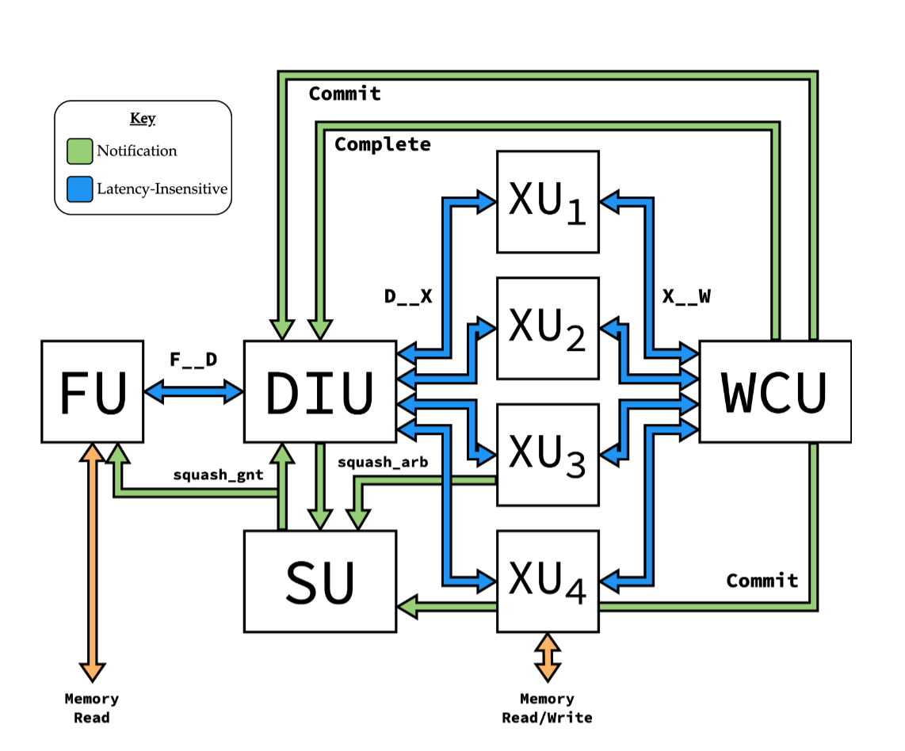

Floating Point Integration in BLIMP
Ridwanah Haque
February 13, 2026
Introduction
Hello, my name is Ridwanah and I am a part of the business operations subteam on C2S2. This semester I wanted to learn more about what members of the digital RTL subteam were working on. Specifically, members Sumaia and Emily worked on integrating floating point adder/subtracter to BLIMP, an integer processor designed by Aiden McNay as his M.Eng project. Figure 1 below is a simplified representation of how BLIMP processes instructions.

Simplified Representation of How BLIMP Processes Instructions
What is BLIMP
At the beginning of the semester, the digital RTL team had to decide what kind of CPU and accelerator design they would work with. They previously explored designs such as picorv32, VexRISCV and Berkeley's Rocket/Boom. However, all these designs have downsides, they're either in Verilog, or have a modular design, but not both. So the team turned to BLIMP, developed by the founder of C2S2 Aidan McNay. It is a latency insensitive and modular processor in Verilog.
BLIMP is designed to be a highly modular processor. Instead of having one complicated, fixed design for a processor, BLIMP breaks the processor down into smaller modules that can be swapped out for one another. This processor already implements fixed-point arithmetic (integers without decimals). This semester, the goal was to integrate floating point support. The members in charge are working on building and integrating the arithmetic module that performs floating point addition and subtraction.
One of the biggest motivations in building and improving BLIMP is that RISC-V are often difficult to use with no high-level modularity and an understanding of the entire design before any changes can be made. BLIMP solves this problem, enabling intra-core modularity which basically allows individual units, like the floating point execution unit, to be modified or replaced without affecting the rest of the structure.
How the Integration Works
In order to add the floating point arithmetic module, the members introduced a new execution unit called ALUF (Arithmetic Logic Unit, F) which performs this function. RISC-V “F” extension is used (— it allows for single-precision floating point) for two instructions:
- OP_FADD (addition)
- OP_FSUB (subtraction)
Each uses a 32-bit floating point operand.
The execution unit will be added between the DIU (decode/instruction) unit and the WCU (writeback control) unit. The DIU unit reads instructions and decides which operation is needed for the function. It then sends operands and the control signal to the execution module. ALUF performs the floating point addition or subtraction and rounds to the nearest even digit (adds 3 extra bits for precision, guard, sticky, and round). Finally, the result from the ALUF goes into the WCU which writes it back into the register. The register file helps store data in order (like inputs and outputs), it has very fast CPU memory, and stores what the CPU is computing currently.
Simulation (C++) vs. Hardware (Verilog)
BLIMP is written in Verilog, which is a hardware description language used to model how hardware is wired. Verilog is used to implement the hardware that would execute the given instructions. It cannot simulate floating point behavior which makes it difficult to test new instructions like floating point add and subtract. Instead, the team used C++ simulations to model floating point addition and subtraction behavior. This allows them to test edge cases and rounding behavior before integrating the execution unit into the rest of BLIMP. Assembly is a low-level programming language used to represent machine instructions. Assembly was also used to represent how instructions would be issued to the processor.
Adding the floating point execution unit is important because it allows for a larger range of numbers to be processed which means there are more applications available like financial modeling, machine learning, scientific simulations, etc.
Challenges Encountered
Some challenges in integrating floating point support stemmed from BLIMP originally being designed as an integer-only processor. The team had difficulty with the register, specifically ensuring that floating point results were correctly written back to the register file. Additionally, BLIMP does not yet include floating point load and store instructions, which makes it difficult to move floating point values between memory and registers. To address these challenges, the members focusing on BLIMP each took ownership of a specific issue, allowing them to work in parallel on the register and the load/store functionality.
Future Plans
Future plans for BLIMP includes expanding floating point support beyond addition and subtraction (V.9 currently being worked on), as well as implementing floating point load and store instructions. As BLIMP continues to expand, additional execution units may be added, further increasing the processor's capabilities.